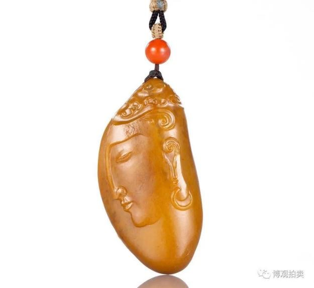
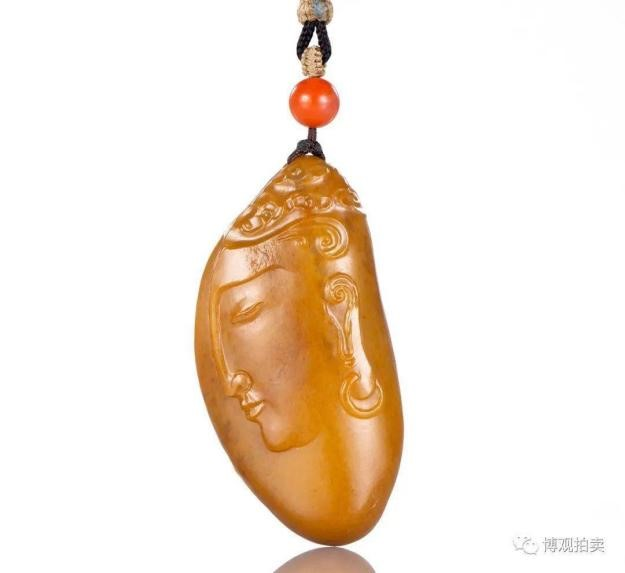

和田玉籽料（独籽）佛韵挂件


独籽。玉质温润，油性上佳，通体伴有黄沁沁色，正、侧、背部均保有部分原皮。作者运用浮雕技法，在其正面精琢以闭目佛首侧像，工艺简约，庄重神圣，佛韵悠然；背部浅琢以莲叶造型，为作品更添清致雅韵。整体型制颀长圆润，大小适中，十分适合收藏佩戴。

独籽。玉质温润，油性上佳，通体伴有黄沁沁色，正、侧、背部均保有部分原皮。作者运用浮雕技法，在其正面精琢以闭目佛首侧像，工艺简约，庄重神圣，佛韵悠然；背部浅琢以莲叶造型，为作品更添清致雅韵。整体型制颀长圆润，大小适中，十分适合收藏佩戴。